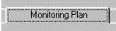
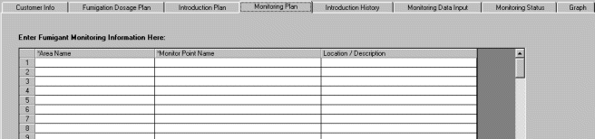
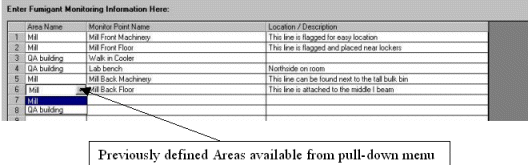
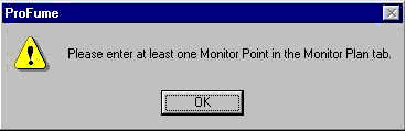

Monitoring Plan Tab
Once you developed the Introduction Plan, you are ready to go to the next step, setting up the Monitoring Plan. The Monitoring Plan is the fourth tab within the ProFume Fumiguide where monitoring line location is set up (monitoring points per areas).

The purpose of the Monitoring Plan is to organize the monitoring points per area or areas within the fumigated space. Also a Location/Description can be entered where the monitoring lines were placed. Below is an example of the Monitoring Tab before monitoring line details are entered.

Notice the example below has four monitoring points for the mill. Area names are available from pull-down menu.

Warning Messages within the Monitoring Plan Tab
Note that at least one monitoring point location must be entered on this tab to monitor the concentration during the Exposure period.

The Monitoring Data Input tab will only permit monitoring data to be entered into monitoring points created in the Monitoring Plan tab.